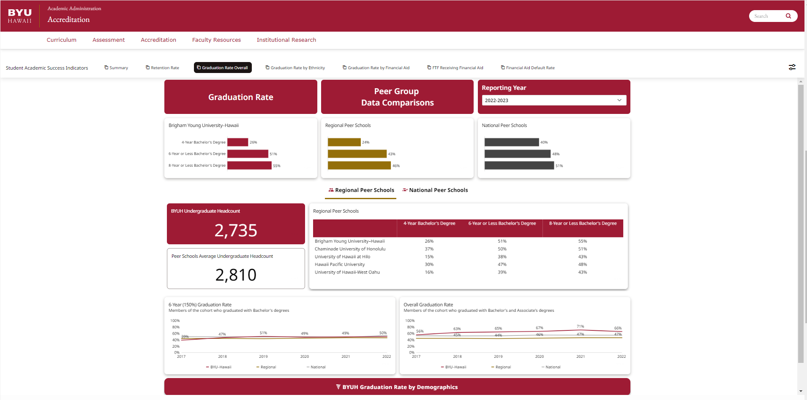
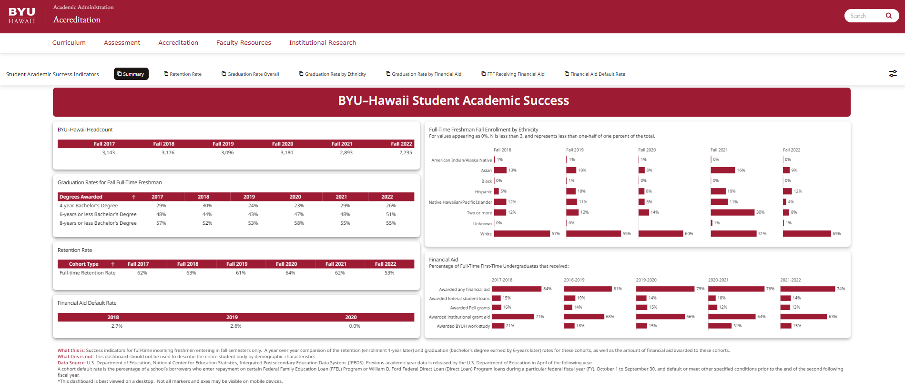

Domo’s business management platform turns data into insights and gives you the context you need for faster, better-informed decisions. Traditional reporting methods often result in backlog, but Domo automates those processes by connecting to your data in real time (Domo, 2024).

Figure 1: Visual comparison of BYU–Hawaii’s graduation performance against regional and national peer institutions from 4-year to 8-year completion rates, including longitudinal data trends and undergraduate headcount metrics.

Figure 2: Snapshot of key academic success indicators at BYU–Hawaii, including student headcount, graduation and retention rates, financial aid distribution, and demographic trends by ethnicity from 2017 to 2022.